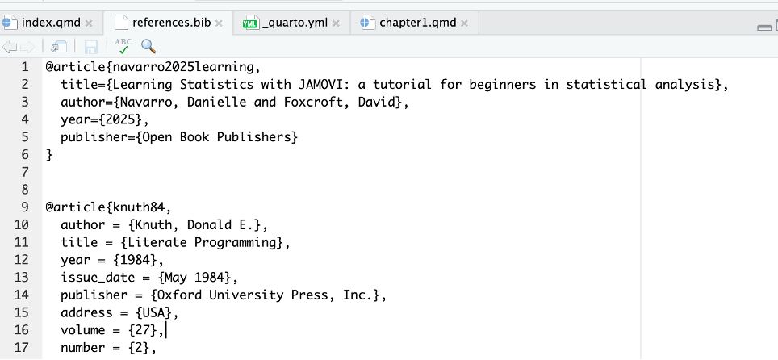
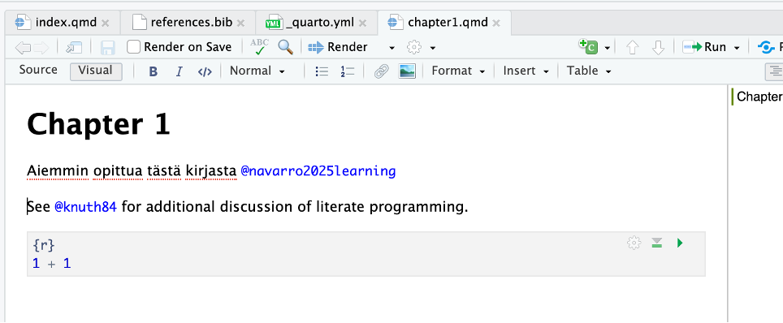
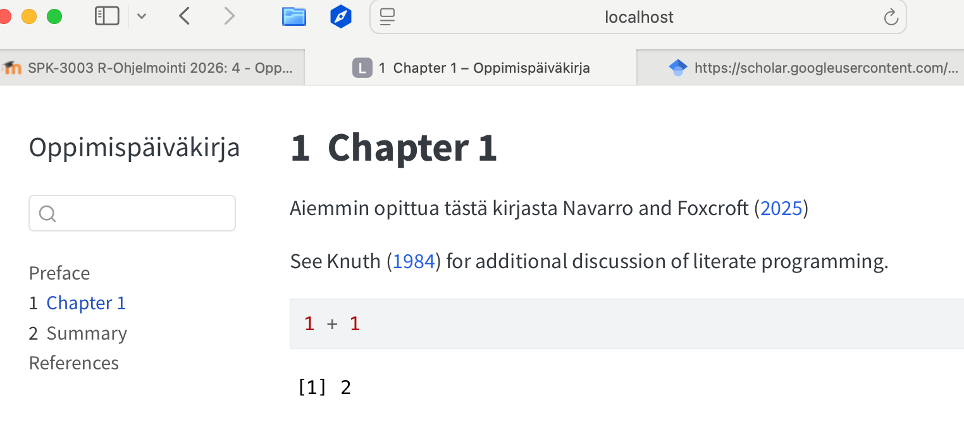
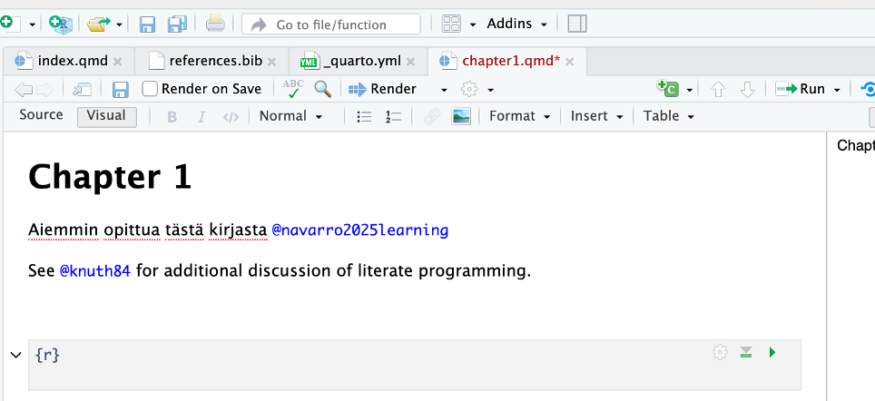
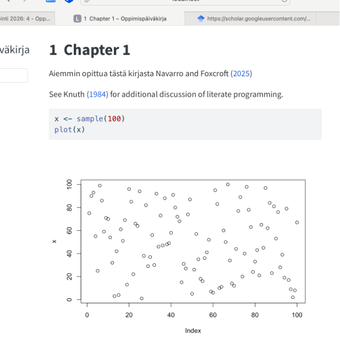

@book{thulin2024modern,
title={Modern Statistics with R: From wrangling and exploring data to inference and predictive modelling},
author={Thulin, M{\aa}ns},
year={2024},
publisher={Chapman and Hall/CRC},
url = {https://www.modernstatisticswithr.com}1 Osa 1 - Quarto-kirja
R-ohjelmointikielen kurssin ensimmäisen viikon muistiinpanot ja tehtävät.
1.1 Lähteiden merkkaaminen ja viittaus quarto kirjassa
Merkataan references.bib tiedostoon seuraavalla tyylillä
Aiemmin opittua tästä kirjasta Navarro and Foxcroft (2025)
See Thulin (2024) for additional discussion of literate programming.
kokeilu Speekenbrink (2023)
Jos on useampi kirjoittaja, niin kirjoittajat erotellaan and sanalla tähän tyyliin
@article{Rmoniste,
title={R-tutuksi [oppimateriaali]},
author={Hyvönen, Ville and Karttunen, Henri and Lehtonen, Toni and Leivonen, Aku and Virolainen, Savi},
year={2018},
publisher={Helsingin yliopisto, Matematiikan ja tilastotieteen laitos}BibTeX saattaa muuttaa otsikon kaikki kirjaimet pieniksi (paitsi ensimmäisen). Jos haluat säilyttää esimerkiksi sanan “R” isona tai pitää “[oppimateriaali]”-tekstin juuri sellaisenaan, se kannattaa suojata aaltosulkeilla.
@manual{Rmoniste,
title = {{R}-tutuksi [{O}ppimateriaali]},
author = {Hyvönen, Ville and Karttunen, Henri and Lehtonen, Toni and Leivonen, Aku and Virolainen, Savi},
year = {2018},
organization = {Helsingin yliopisto, Matematiikan ja tilastotieteen laitos},
note = {Luettavissa verkossa},
url = {https://www.mv.helsinki.fi/home/mjxpirin/medstat_course/material/Rmoniste_tiltu1.pdf}
}1.2 Video 4: Quarto kirjan luominen
tehdään kirja / nettisivusto, josta voi aina nopeasti etsiä apua
quarto dokumentit ovat .qmd tiedostoja
Control + L —> tyhjentää konsolin
quarto install tinytex
jotta quarto osaa tehdä pdf:iä täytyy asentaa tinytex
voi tehdä myös terminaalissa
vielä epäselvää mikä on konsolin ja terminaalin ero ja miksi nämä komennot tehtiin nimenomaan terminaalissa
#quarto render- komento tekee html kirjan
#quarto render --to pdf - (eli kaksi viivaa ja to pdf quarto renderin perään)
- tekee pdf:n projektista
#quarto preview - tekee html version joka toimii local host nettisivulla
Kaikki yllä olevat komennot tehtiin terminaalissa
YML tiedosto
yml fileen voidaan tehdä muokkuksia ja esim. lisätä kirjan kappaleita
yml tiedostoon siis riittää, että listataan tiedoston nimi
qmd tiedostoon voidaan sitten kirjoittaa mitä halutaan
esim. tehtiin chapter1.qmd tiedosto
Quarto kirja
- yml tiedoston chapters kohtaan listataan kappaleeet
. jokaisesta kappaleesta täytyy olla oma .qmd tiedosto

references.bib
- tiedostoon voidaan lisätä lähteitä bib text muodossa

- lähteisiin voidaan viitata @ merkillä ja nimellä, jolloin ne näkyvät näin:


yläoikealla olevasta vihreästä c kuvakkeesta voidaan lisätä koodinpätkiä
- se lisää alhaalla näkyvän harmaan laatikon, johon voi kirjoittaa r-koodia (voi valita muitakin ohjelmointikieliä)
1 + 1 [1] 22 * 2[1] 44 / 5 [1] 0.8Lisätyt koodinpätkät näyttävät tältä.
Jos haluaa koodinpätkän, jota ei suoriteta kannattaa käyttää komentoa
- #| eval: false
install.packages(c("swirl", "swirlify"))
library(swirl)
library(swirlify)
swirl::install_course("R Programming")
swirl::install_course("The R Programming Environment")
swirl::install_course("Advanced R Programming")
swirl()Nyt boksiin laitettua koodinpätkää ei suoriteta, mutta näyttää kuitenkin hyvältä ja sen voi suoraan kopioida
Yllä näkyvä swirl paketti on R-kielen opetuspaketti. Sen avulla voi myös opetella kieltä.

koodi näkyy kirjassa yllä olevalla tavalla
- harmaan koodipalkin oikeasta reunasta voi kopsata koodin